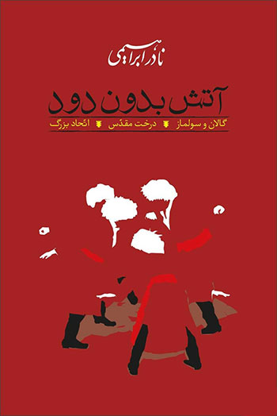

خلاصه: این کتاب از تاریخ قبل از پادشاهی مادها یعنی دورهٔ حکومت
ایرانبانان زن بر ایرانویج تا اواخر دورهٔ حکومت ساسانیان بر
ایران نوشته شده و بیشتر حالت رمان تاریخی را دارد.
« جزیره »
نویسنده: غزاله علیزاده
خلاصه: این کتاب از تاریخ قبل از پادشاهی مادها یعنی دورهٔ حکومت
ایرانبانان زن بر ایرانویج تا اواخر دورهٔ حکومت ساسانیان بر
ایران نوشته شده و بیشتر حالت رمان تاریخی را دارد.
« بیگانه »
نویسنده: آلبر کامو
مترجم: جلاال آل احمد
بیگانه (به فرانسوی: L'Étranger) رمانی نوشته آلبر کامو نویسنده فرانسوی در سال ۱۹۴۲ است. مضمون و چشمانداز آن اغلب به عنوان نمونه ای از فلسفه پوچ انگار و اگزیستانسیالیسم ذکر میشود. گرچه خود کامو مورد دوم را رد میکند. این اثر برنده جایزه نوبل ادبیات ۱۹۵۷ شد.
« عزاداران بَیَل »
نویسنده: غلامحسین ساعدی
عزاداران بَیَل مجموعه هشت داستان پیوسته دربارهٔ فلاکتهای مدام مردمان روستایی به نام بَیَل است. غلامحسین ساعدی این کتاب را در سال ۱۳۴۳ چاپ کرده است.
« خداوند الموت »
نویسنده: پل آمیر
مترجم: ذبیح الله منصوری
خداوند الموت کتابی است نوشتهٔ نویسندهای فرانسوی به نام پل آمیر و با ترجمهٔ فارسی ذبیحالله منصوری. موضوع کتاب نهضت حسن صباح است. ترجمه این کتاب به دلیل اقتباسهای مترجم مورد انتقادهای زیادی قرار گرفتهاست.
« بوف کور »
نویسنده: صادق هدایت
بوف کور شناختهشدهترین اثر صادق هدایت نویسنده معاصر ایرانی، رمانی کوتاه و از نخستین نثرهای داستانی ادبیات ایران در سدهٔ ۲۰ میلادی است. این رمان به سبک فراواقع نوشته شده و تکگویی یک راوی است که دچار تَوَهُم و پندارهای روانی است.
« بامداد خمار »
نویسنده: فتانه حاج سید جوادی
بامداد خمار رمانی است نوشتهٔ فتانه حاج سیدجوادی که در سال ۱۳۷۴ منتشر شد.این کتاب، داستان سوزناک عشق نافرجام دختری از اعیان دوره قدیم تهران به جوانی نجار از طبقه پایین جامعه است.
« شوهر آهو خانم »
نویسنده: علی محمد افغانی
شوهر آهو خانم نخستین رمانِ علیمحمد افغانی است.
داستان در سال ۱۳۱۳ در کرمانشاه رخ میدهد و درون مایه اصلی داستان با واقعیّت اسفبار زندگی زنان در لایههای پائینی جامعه در آن سالها ارتباطی نزدیک دارد و در نکوهش آئین چند همسری است.
« سینوهه »
نویسنده: میکا والتاری
مترجم: ذبیح الله منصوری
سینوهه نام زندگی نامه ای تاریخی است که به قلم میکا والتاری نویسندهٔ فنلاندی در سال ۱۹۴۵ نگاشته شدهاست. این کتاب که مهمترین اثر نویسنده است، که از وقایع دوران فرعون آخناتون و آغاز سلطنت فرعون هورم هپ نوشته شدهاست.
« ملت عشق »
نویسنده: الیف شافاک
مترجم: ارسلان فصیحی
ملت عشق نام رمانی است نوشته الیف شافاک (الف شفق) که در سال ۲۰۱۰ / ١٣٨٩ به صورت همزمان به دو زبان انگلیسی و ترکی منتشر شد.ترجمه فارسی آن در مدتی کوتاه، عنوان یکی از پرفروش ترین کتابهای بازار کتاب ایران را کسب کردهاست
« کیمیاگر »
نویسنده: پائولو کوئیلو
مترجم: مهدی صائمی
این رمان دربارهٔ چوپانی اسپانیایی به نام سانتیاگو است که در رؤیای خود، محل گنجی مدفون را در حوالی اهرام مصر مشاهده میکند و به قصد تحقق بخشیدن به این رؤیای صادقه که آن را افسانهٔ شخصی خود میخواند، موطنش، آندلس را رها میکند و رهسپار صحرای آفریقا میشود.

« آتش بدون دود »
نویسنده: نادر ابراهیمی
آتش، بدون دود، رمان بلندی است اثر نادر ابراهیمی که در هفت جلد منتشر شده و نویسنده در آن پس از اشاره به زیباییهای ترکمنصحرا در سه جلد اول در چهار جلد بعد به شیوهای داستانی-تاریخی به بیان مبارزات انقلابی معاصر پرداخته است.
« اسکندر »
نویسنده: هارولد لمب
مترجم: ذبیح الله منصوری
هارولد لمب مؤلف سرشناس کتب تاریخی در این کتاب سرگذشت و فتوحات اسکندر مقدونی را براساس اطلاعات و منابع تاریخی به شیوهای روان و زیبا روایت کرده است
« عامه پسند »
نویسنده: چالز بوکفسکی
مترجم: پیمان خاکسار
عامهپسند (به انگلیسی: Pulp) آخرین رمان کامل شاعر و نویسنده آمریکایی چارلز بوکوفسکی است. این کتاب در سال ۱۹۹۴ و اندکی پیش از مرگ نویسنده، در آمریکا منتشر شد.